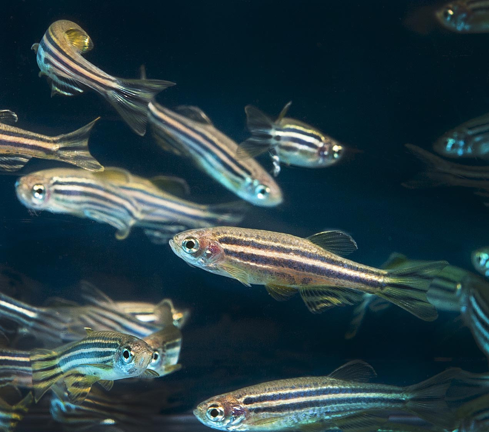

肝癌與腸癌
研究團隊利用斑馬魚模式，探討基因調控的改變如何影響肝癌與腸癌的形成。

研究團隊利用斑馬魚模式，探討基因調控的改變如何影響肝癌與腸癌的形成。
團隊研究脂質代謝失調對肝臟的影響，並利用斑馬魚篩選可能調節脂質代謝的小分子化合物。
實驗室開發基因轉殖與基因編輯技術，以便在活體動物中研究基因功能。
 實驗室主持人
實驗室主持人何國牟教授專長為分子遺傳學、分子醫學及發育生物學。他於國立臺灣海洋大學取得學士與碩士學位，1998 年獲英國愛丁堡大學博士學位。其後於美國賓州大學及中央研究院從事博士後研究，2004 年起任教於國立臺灣海洋大學，並於 2018 年加入國立陽明大學。
學術履歷（PDF）